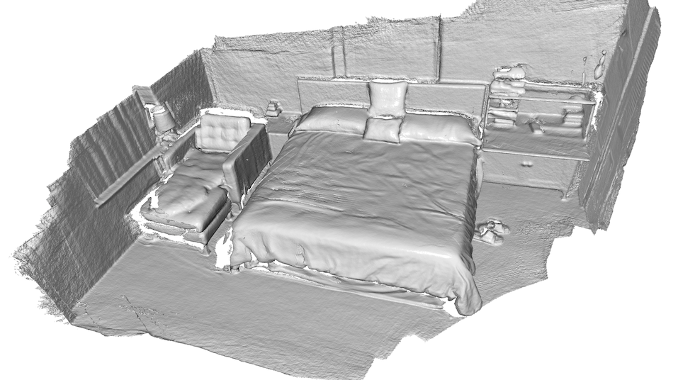

Integrate scene¶
The final step of the system is to integrate all RGBD images into a single TSDF volume and extract a mesh as the result.
Input arguments¶
The script runs with python run_system.py [config] --integrate. In
[config], ["path_dataset"] should have subfolders image and depth
in which frames are synchronized and aligned. In [config], the optional
argument ["path_intrinsic"] specifies path to a json file that has a camera
intrinsic matrix (See /tutorial/pipelines/rgbd_odometry.ipynb#read-camera-intrinsic for
details). If it is not given, the PrimeSense factory setting is used instead.
Integrate RGBD frames¶
13 14 15 16 17 18 19 20 21 22 23 24 25 26 27 28 29 30 31 32 33 34 35 36 37 38 39 40 41 42 43 44 45 46 47 48 49 50 51 | # examples/python/reconstruction_system/integrate_scene.py
def scalable_integrate_rgb_frames(path_dataset, intrinsic, config):
poses = []
[color_files, depth_files] = get_rgbd_file_lists(path_dataset)
n_files = len(color_files)
n_fragments = int(math.ceil(float(n_files) / \
config['n_frames_per_fragment']))
volume = o3d.pipelines.integration.ScalableTSDFVolume(
voxel_length=config["tsdf_cubic_size"] / 512.0,
sdf_trunc=0.04,
color_type=o3d.pipelines.integration.TSDFVolumeColorType.RGB8)
pose_graph_fragment = o3d.io.read_pose_graph(
join(path_dataset, config["template_refined_posegraph_optimized"]))
for fragment_id in range(len(pose_graph_fragment.nodes)):
pose_graph_rgbd = o3d.io.read_pose_graph(
join(path_dataset,
config["template_fragment_posegraph_optimized"] % fragment_id))
for frame_id in range(len(pose_graph_rgbd.nodes)):
frame_id_abs = fragment_id * \
config['n_frames_per_fragment'] + frame_id
print(
"Fragment %03d / %03d :: integrate rgbd frame %d (%d of %d)." %
(fragment_id, n_fragments - 1, frame_id_abs, frame_id + 1,
len(pose_graph_rgbd.nodes)))
rgbd = read_rgbd_image(color_files[frame_id_abs],
depth_files[frame_id_abs], False, config)
pose = np.dot(pose_graph_fragment.nodes[fragment_id].pose,
pose_graph_rgbd.nodes[frame_id].pose)
volume.integrate(rgbd, intrinsic, np.linalg.inv(pose))
poses.append(pose)
mesh = volume.extract_triangle_mesh()
mesh.compute_vertex_normals()
if config["debug_mode"]:
o3d.visualization.draw_geometries([mesh])
|
This function first reads the alignment results from both Make fragments and Register fragments, then computes the pose of each RGBD image in the global space. After that, RGBD images are integrated using /tutorial/pipelines/rgbd_integration.ipynb.
Results¶
This is a printed log from the volume integration script.
Fragment 000 / 013 :: integrate rgbd frame 0 (1 of 100).
Fragment 000 / 013 :: integrate rgbd frame 1 (2 of 100).
Fragment 000 / 013 :: integrate rgbd frame 2 (3 of 100).
Fragment 000 / 013 :: integrate rgbd frame 3 (4 of 100).
:
Fragment 013 / 013 :: integrate rgbd frame 1360 (61 of 64).
Fragment 013 / 013 :: integrate rgbd frame 1361 (62 of 64).
Fragment 013 / 013 :: integrate rgbd frame 1362 (63 of 64).
Fragment 013 / 013 :: integrate rgbd frame 1363 (64 of 64).
Writing PLY: [========================================] 100%
The following image shows the final scene reconstruction.
{kind=link}